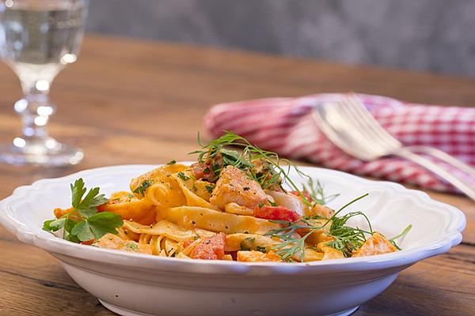

Tagliatelle al Salmone

Description:
Genau wie beim Italiener
Ingredients:
- 250g Lachs, frisch
- 2 EL Olivenöl
- 2 Schalotten, gehackt
- 2 Knoblauchzehen
- 200ml Weisswein, trockener
- 200ml Gemüsebrühe
- 1 kl. Dose Tomaten, stückige
- 2 TL Tomatenmark
- n.B. Salz und Pfeffer
- 0,5 Limette, Saft davon
- 200ml Sahne
- 500g Tagliatelle oder andere Bandnudeln
- 1 TL Dill, gehackt
- 2 EL Petersilie, gehackt
Steps:
- Zunächst den Lachs würfeln und im Olivenöl rundum kurz anbraten, dann herausnehmen.
- Die gehackten Schalotten in die Pfanne geben. Kurz anschwitzen, bis sie glasig sind.
Dann zwei Knoblauch hineinpressen und direkt mit dem Weißwein ablöschen. Nun
den Wein bis zur Hälfte reduzieren und dann die Gemüsebrühe dazugeben. Dies
nun ca. weitere 5 Minuten zusammen köcheln lassen.
- Anschließend die Dosentomaten und das Tomatenmark beifügen. Ordentlich mit
Salz und Pfeffer würzen. Den Saft der halben Limette dazugeben, die Soße
abschmecken und evtl. nach Belieben noch eine Zehe Knoblauch hineinpressen.
Nach ca. 5 Minuten die Sahne darüber gießen und dann den Lachs wieder in die
Soße legen. Nochmal kurz aufkochen lassen, dann die zwischenzeitlich gekochten
Tagliatelle in die Sauce geben und kurz darin ziehen lassen, damit sie etwas Sauce
aufnehmen können.
- Dill und Petersilie darüber streuen und dann servieren.